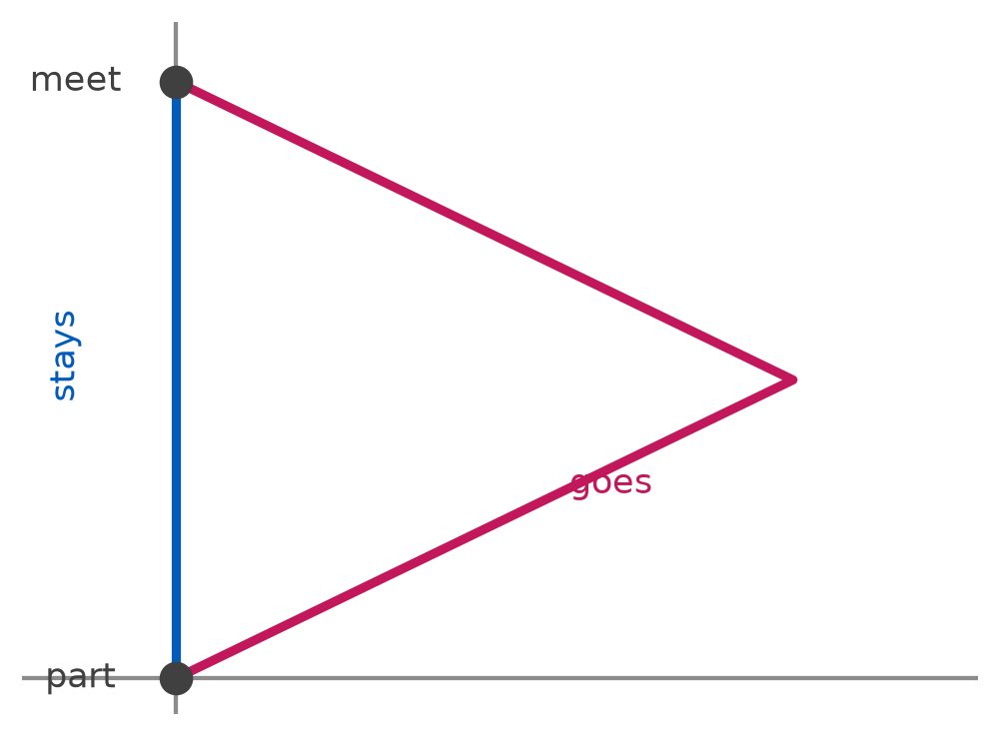
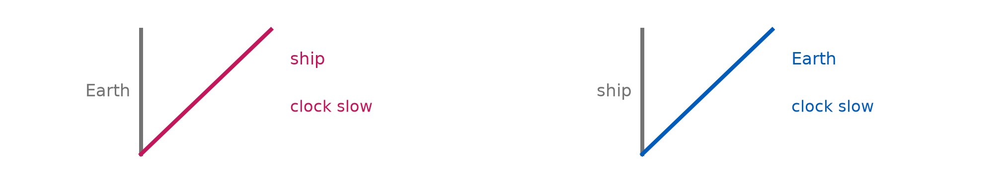
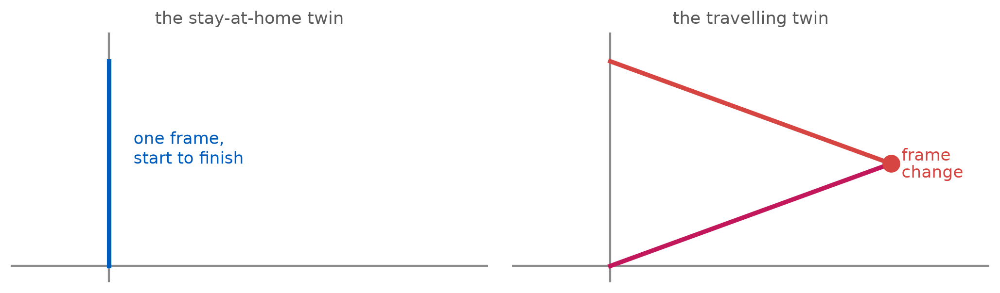
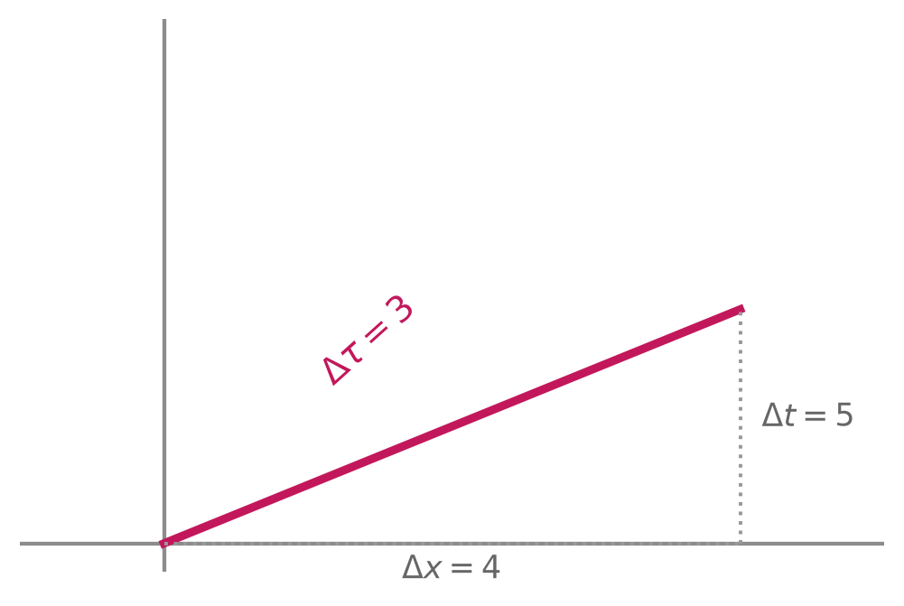
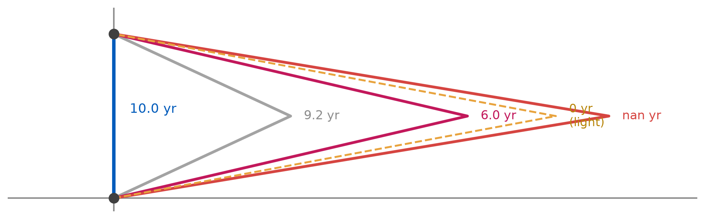
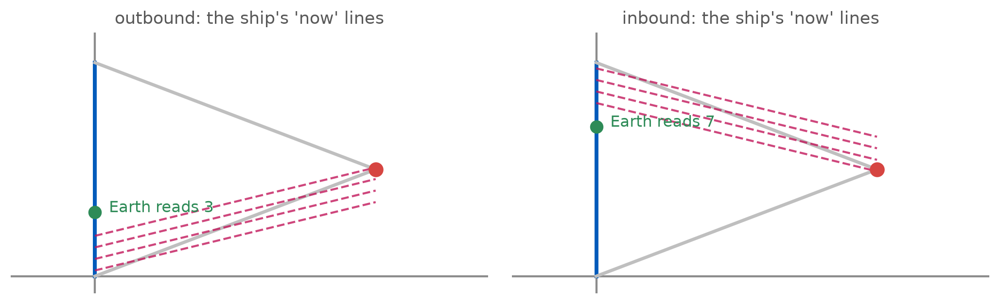
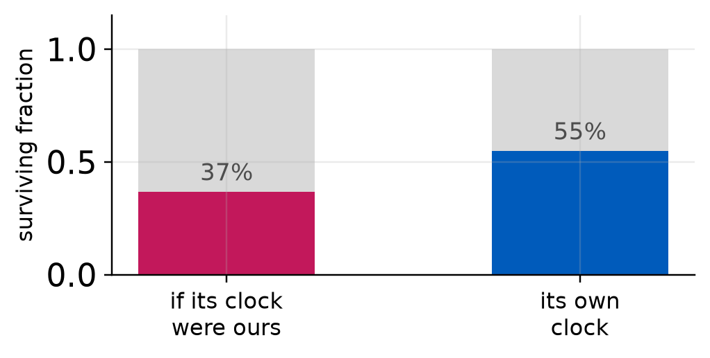
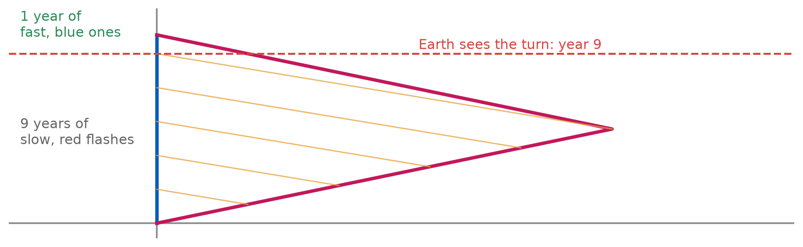
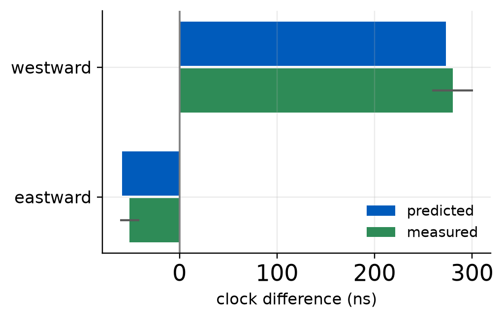
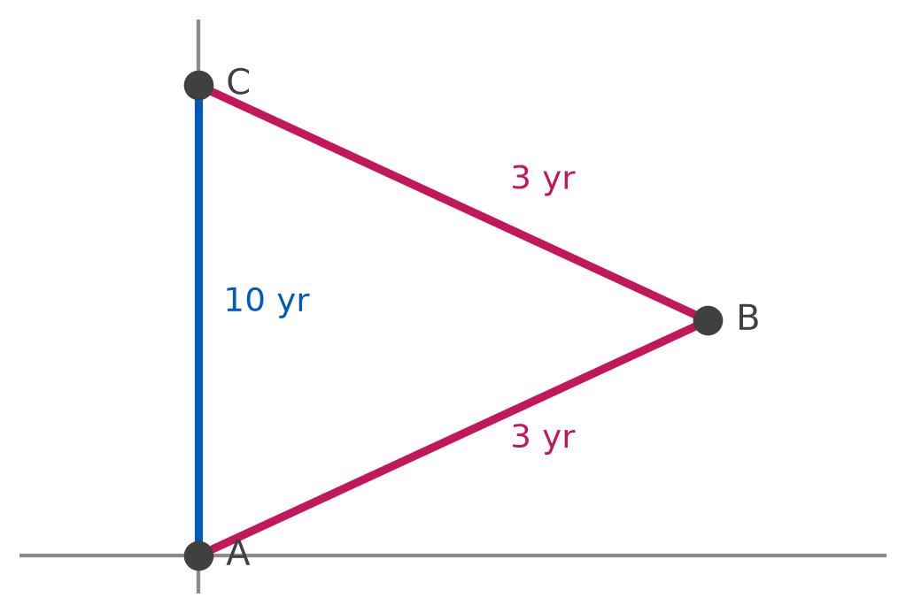

PHY 208 · Special Relativity · Lecture 10
2026-09-24
Presentations round 1 continues — today’s pair sees me at 10:55.
Notebook entry from Tuesday’s hyperbola demo due 11:00 today.
Prep check 5 due Tue 10:30 — the twin paradox, TW ch. 4. Milestone 1 due Fri Oct 2: Part 3 needs your L08 interval numbers.
| the objection | the answer |
|---|---|
| “the watches only look different” | they are read side by side, at one event |
| “it is a measurement artefact” | the muon does this trip with no engine and no observer |
| “surely you could argue it the other way” | you could, if both worldlines were straight. Only one is |
| “so travel makes you immortal” | no: your own watch ticks normally the whole way |
Nothing slows down for the traveller. Their coffee cools normally, their heart beats normally, their watch ticks once a second. They simply take a shorter route between the same two events.
Two events on the same invariant hyperbola: what do they share, and what does the page distance tell you?
They share the interval from the origin, so a clock riding to either one reads the same. Page distance tells you nothing physical.
The answer worth flagging: “they are the same distance apart.”
Which distance? On the page, no. In interval, yes. The whole difficulty of reading these diagrams is that your eyes are Euclidean and the geometry is not.
One twin stays on Earth. One flies to a star at \(0.80c\) and comes straight back.
They part at one event. They meet again at another.
When they compare wristwatches, what can the answer possibly be?

Earth says
The ship moves at \(0.80c\).
\(\gamma = 1.667\), so the ship’s clock runs slow.
The traveller comes back younger.
The ship says
Earth moves at \(0.80c\).
\(\gamma = 1.667\), so Earth’s clock runs slow.
Earth should be younger.

Both arguments use the same physics, correctly. They cannot both be right, because the twins meet — and at a reunion the two watches show two numbers that anyone standing there can read.
So one of the two setups is not what it claims to be. Which, and why?

“Did you stay in one inertial frame the whole time?”
Earth: yes. The traveller: no — one frame out, a different frame back. The two histories are not mirror images, and the diagram shows it before any number is computed.
A clock does not read the coordinate time of any frame. It reads the interval along its own worldline, and nothing else.
\[\Delta\tau = \sqrt{\Delta t^{2} - \Delta x^{2}}\]
For a bent path, add it up leg by leg. That is the entire calculation, and it is the same one from Thursday’s activity.

5 years of coordinate time, 4 light-years of travel, and the watch on board reads 3 years. A 3-4-5 triangle, with the minus sign.
beta = 0.80 gamma = 1.667 star at 4.0 ly
stay-at-home: 10.00 yr (straight worldline)
traveller: 6.00 yr = 2 x sqrt(25 - 16) = 2 x 3.0
difference: 4.00 yrEach leg is a straight worldline, so each leg’s proper time is just its interval: \(\Delta\tau = \sqrt{\Delta t^{2} - \Delta x^{2}}\), in years and light-years.
6 years against 10. Not an opinion and not an illusion: the two watches are read side by side at the reunion event.

Same two events, four different routes, four different ages. The straight one ages the most, and the closer a route hugs the 45° cone, the less time it records — down to zero for light itself.
It is tempting to say the acceleration causes the ageing. It does not.
Send the traveller twice as far at the same speed, with an identical turnaround, and the gap grows:
star at 2.0 ly: Earth 5.00 yr ship 3.00 yr gap 2.00
star at 4.0 ly: Earth 10.00 yr ship 6.00 yr gap 4.00
star at 8.0 ly: Earth 20.00 yr ship 12.00 yr gap 8.00
star at 16.0 ly: Earth 40.00 yr ship 24.00 yr gap 16.00Identical turnaround every time, wildly different gaps. The acceleration marks where the symmetry breaks. What sets the size of the difference is the length of the coasting legs.

At the turn, the ship’s “now on Earth” jumps from 3 years to 7 — not because anything happened on Earth, but because the ship swapped which tilted line it calls the present.
Two twins part, and reunite. The traveller coasts out at \(0.80c\), turns quickly, and coasts back — Earth ages 10 years, the traveller 6.
Now run it again with a turnaround that takes a full year of gentle thrust instead of a moment, everything else the same.
(a) It disappears, because a gentle turn is nearly inertial and the symmetry is restored
(b) It grows a lot, because the gap comes from the acceleration and there is now much more of it
(c) It changes by roughly a year’s worth, because the turnaround is where the ageing happens
(d) It stays close to 4 years, because the coasting legs are almost unchanged and they are what sets it
turn lasting 0.0 yr: Earth 10.00 yr ship 6.00 yr gap 4.00
turn lasting 0.5 yr: Earth 10.50 yr ship 6.37 yr gap 4.13
turn lasting 1.0 yr: Earth 11.00 yr ship 6.74 yr gap 4.26
turn lasting 2.0 yr: Earth 12.00 yr ship 7.49 yr gap 4.51A whole year of turning moves the gap by a fraction of a year. The legs set the answer; the turn only decides which twin is on the bent line.
Nothing about the trip requires a person, a rocket, or a decision. Put an unstable particle on the bent worldline and it decays late by exactly the same factor.
That is the muon, from week 3, restated: it is the travelling twin, and the mountain is the round trip we never ran.

No observer, no awareness, no acceleration story required. The difference is a property of the path, and a particle with no clock face on it records it just as faithfully.
| route | what it uses | what it says |
|---|---|---|
| interval | \(\Delta\tau = \sqrt{\Delta t^{2} - \Delta x^{2}}\) per leg | the bent path is shorter in proper time |
| simultaneity | the ship’s now-lines swap at the turn | the missing 4 years is in the swap |
| Doppler | count signals actually received | both twins agree on the count |
Three arguments, three different tools, 10 and 6 every time. That agreement is not a coincidence: they are three readings of the same diagram.
Each twin sends one flash per year of their own time. Nothing to interpret: count what arrives.
Doppler factor k = 3.000 approaching, 0.333 receding
traveller receives Earth's flashes:
outbound 3.0 yr x 0.333 = 1.00
inbound 3.0 yr x 3.000 = 9.00
total = 10.00 -> Earth aged 10
Earth receives the traveller's flashes:
first 9.0 yr at 0.333 -> 3.00
then 1.0 yr at 3.000 -> 3.00
total = 6.00 -> traveller aged 6Each twin counts the other’s flashes and gets the right answer for the other. No frames, no simultaneity, no diagram: just arrivals.

Earth spends 9 of 10 years receiving the slow rate and one year receiving the fast one. The traveller splits 3 and 3. That lopsidedness is the paradox, with no interpretation in it at all.
Hafele and Keating, 1971. Four caesium clocks, commercial airliners, eastward and westward round the world, checked against the clocks at the US Naval Observatory.
predicted measured +/- (ns)
eastward -59 -51 10
westward 273 280 21Nanoseconds, and the signs are opposite: an eastward flight loses time, a westward flight gains it.

In pairs, ten minutes. Same three steps every row; all distances in light-years, all times in years, so \(c = 1\).
1 Earth time \(t = 2d/\beta\) · 2 one leg’s interval \(\sqrt{(t/2)^{2} - d^{2}}\) · 3 double it for the round trip.
| \(\beta\) | star at \(d\) | ask | |
|---|---|---|---|
| 1 | \(0.80\) | 4.0 ly | Earth 10.0 yr, traveller 6.0 yr, gap 4.0 |
| 2 | \(0.60\) | 3.0 ly | how much younger does the traveller come back? |
| 3 | \(0.995\) | 10.0 ly | same question, and: what is \(\gamma\) here? |
Row 1 is done for you — reproduce it, then run rows 2 and 3. No match on row 1 \(\to\) hand up now.
beta d (ly) Earth ship gap gamma
1 0.800 4.0 10.00 6.00 4.00 1.67
2 0.600 3.0 10.00 8.00 2.00 1.25
3 0.995 10.0 20.10 2.01 18.09 10.01Row 3 is the one to notice: 20 years of Earth history for 2 years of wristwatch. The gap is not proportional to anything simple — it runs away as \(\beta \to 1\), which is exactly \(\gamma\) doing its work.

Three events: A they part, B the turn, C they meet.
| worldline | route | proper time |
|---|---|---|
| stay-at-home | A \(\to\) C direct | 10 yr |
| traveller | A \(\to\) B \(\to\) C | 3 + 3 = 6 yr |
Both start at A. Both end at C. The route is the only difference, and the route is what a clock measures.
| the claim | verdict |
|---|---|
| “each twin sees the other’s clock slow” | true, while both coast |
| “so the situation is symmetric” | false — only one changes frames |
| “the acceleration causes the ageing” | false — the legs set the gap |
| “you need general relativity” | false — SR handles accelerated observers |
| “the traveller really is younger” | true, and two watches prove it |
There is no paradox. There is a bent worldline and a straight one between the same two events, and in this geometry straight is longest.
| The pole and the barn | a 20 m pole inside a 10 m barn, doors shut |
| The bug and the rivet | who gets squashed, and in whose frame |
| The tool | relativity of simultaneity, every single time |
| Prep check 5 | due Tue 10:30 — TW ch. 4 |
| Presentations | round 1 continues |
A classmate says: “The traveller is younger because accelerating slows your clock down.”
On UB Learns, under Quizzes. Due 11:59 tonight.
Not graded, ever — I read these to decide what to spend class time on. “I don’t follow this, and here is where I lost it” is a useful answer.
PHY 208 — The Twin Paradox Tim Thomay · University at Buffalo · Fall 2026
Course material licensed CC BY-SA 4.0
Images retain their original licenses — see img/CREDITS.md